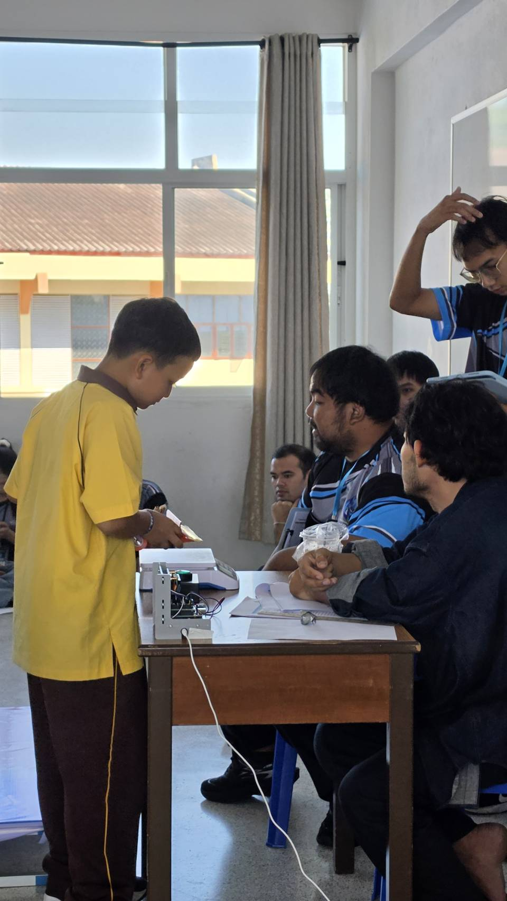

ด.ช.กันตพัฒน์ ศรีตะพันธ์
ชื่อเล่น : กันต์
นักเรียนชั้นมัธยมศึกษาปีที่ 2
ยินดีต้อนรับเข้าสู่เว็บไซต์ประวัติส่วนตัวของฉัน
1. ประวัติส่วนตัวชื่อ-นามสกุล : ด.ช.กันตพัฒน์ ศรีตะพันธ์
ชื่อเล่น : กันต์
วันเกิด : 16 พฤศจิกายน 2555
อายุ : 14 ปี
เพศ : ชาย
สัญชาติ : ไทย
เชื้อชาติ : ไทย
ศาสนา : พุธ
กรุ๊ปเลือด : O
ที่อยู่ : จังปทุมธานี ประเทศไทย
คติประจำใจ :ฝันให้ไกลแล้วไปให้ถึง
3. ประวัติการศึกษาระดับประภม
โรงเรียนอัมพรไพศาล
4. ความสามารถพิเศษเล่นดนตรีได้
5. งานอดิเรกและความสนใจหุ่นยนต์
เป้าหมายในอนาคตช่างหุ่นยนต์/คอม
8. ช่องทางการติดต่อFacebook : kantapat sritapan
Instagram : kntapat_s
Email : kantapatsritapan2555@email.com
โทรศัพท์ : 0647362542